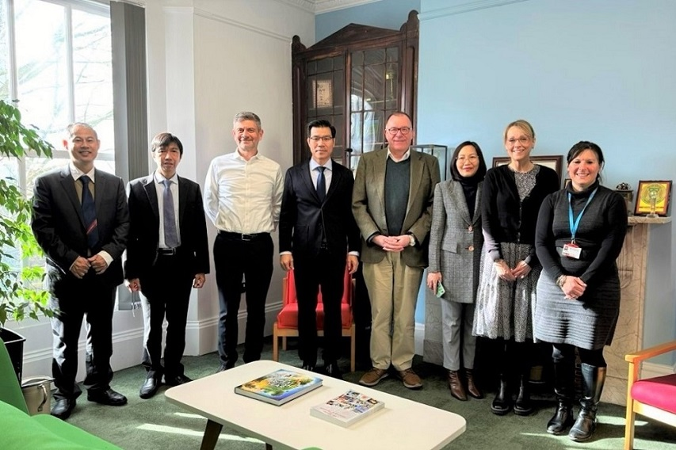
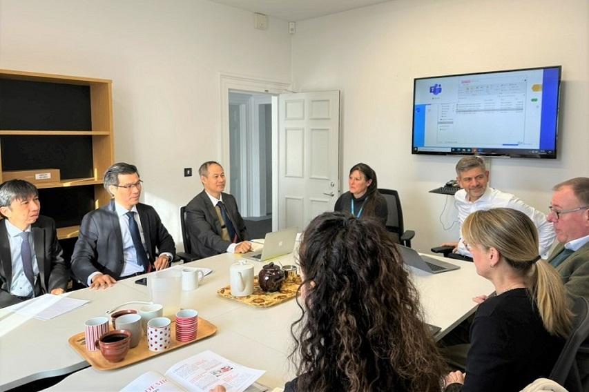

On March 1, 2024, Ton Duc Thang University (TDTU) and its affiliated institutions participated in a seminar to summarize their collaborative programs, which was part of the Tailor-made Recycled Aggregate Concretes (TRAC) project hold at the University of Plymouth - Plymouth, United Kingdom. The project included attendees from 5 Universities including University of Plymouth (United Kingdom), Chalmers Tekniska Högskola (Sweden), Ton Duc Thang University (Vietnam), Phranakhon Rajabhat University (Thailand) and Shenzhen University (China). The project focuses on research upon the application of recycled aggregates for construction materials, in the context of circular and sustainable economic development. This is an initiative funded by the Marie Skłodowska-Curie Research and Innovation Staff Exchange (RISE), with the total value of up to £450,000. Speaking at the seminar, TDTU leaders expressed their great appreciation of the research cooperation programs as well as the professor/researcher exchange courses between universities' worldwide campuses. TDTU continued to reaffirm their readiness in launching new cooperation initiatives in the coming time, as contribution to connect international universities for higher education.

The TDTU delegation also took this event to visit and work with University of Plymouth, in order to expand new opportunities for mutual cooperation. Thereby, the two parties agreed to implement bilateral cooperation programs in the areas of training; co-researching upon the sectors of renewable energy, marine environment, climate change mitigation; co-hosting international conferences and student/lecturer exchange, etc. Besides, both parties also thoroughly discussed the joint-training models in the form of franchise at Undergraduate and Master's levels in Business, Finance, Information Technology, … that allow students to study full-time in Vietnam while following the course work and earning a degree from the University of Plymouth. In addition, the two parties reassured to continue to promote student/lecturer exchange programs, short-term courses, cultural exchanges and internships - with the aim to further facilitate TDTU students' getting access to a diverse learning & living environment amongst the most developed European countries. The TDTU delegation also took this occasion to visit the University of Plymouth's state-of-the-art research centers in the fields of renewable energy, which included practical models and simulations of off-shore wind power projects; and the Maritime research center featuring realistic oceanic activities (e.g. waves, winds and currents,…) that serves the study of environmental research, climate change, shipbuilding, drilling rigs oil and off-shore wind power system, etc. This is amongst the UK & Europe's leading facilities on renewable energy and maritime that combines training, scientific research & business cooperation to develop new products and technology.

A synopsis of the meeting, TRAC project summary & cooperation exchange at Plymouth
The University of Plymouth is the UK's leading public research institute that ranked 500 according to THE World University Rankings 2024. It is also recognized amongst the UK's leading research university in the fields of renewable energy, maritime, environmental and medical studies with a total number of 19,000 students. In particular, the University has honorably received the Queen's Anniversary Prizes for three times, based on their research and applications upon the field of climate change mitigation, zero carbon emission, as well as their teaching quality & services.